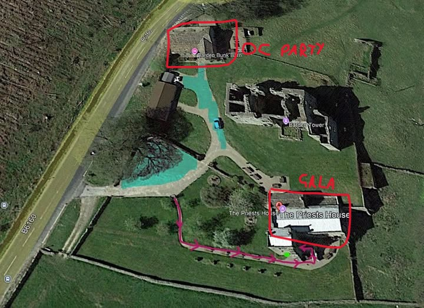

House Crossland
House Crossland
House Crossland
House Crossland
Attendee Information & Event Details
Venue: The Priest's House, Barden Tower, Skipton BD23 6AS
Postcode: BD23 6AS
The Priest's House is located within the Barden Tower estate, set in the beautiful Yorkshire Dales near Skipton.
Note: For a fully interactive map, click "Open in Google Maps" above

Parking Instructions:
Free on-site parking is available at the venue. Please follow the directions shown on the map above.
By Train:
Skipton is the nearest station with good public transport links. From there, it's about a 15-minute taxi/ride to the venue.
Taxi Services:
Pre-book taxis in advance for departure, as wait times can be long. Uber is unreliable in the area – use local firms instead:
If you find yourself lost or need assistance on the day, please contact:
Here's the planned timeline for the Grand Crossland Gala 2026. Please note that times are approximate and may be subject to minor adjustments.
The following characters are confirmed to be attending the Grand Crossland Gala 2026:
If the table doesn't display correctly on your mobile device, you can view the full attendance list here.
| Player Name ↕ | Character Name ↕ | Affiliation ↕ | Nation ↕ |
|---|
Nope! All cutlery, plates, and glassware will be provided. Just bring yourself (and maybe a cloak or vaguely IC coat if you want to step outside for entertainment).
Date: Saturday, 16th January 2027
Arrivals: From 5:00 PM (mulled wine on arrival 🍷)
Event Ends: By 11:30 PM
On-site Bunkhouse (Limited space): Dorm-style beds, available Friday & Saturday, £75 per person for both nights.
Budget hotels nearby: Travelodge Skipton and Premier Inn Skipton are both 15–20 minutes away. Several guests are already booked there, so ride-sharing may be possible.
Boutique options: Skipton is scattered with lovely independent B&Bs and hotels, and there are plenty to take your pick from.
Friday Night OC Party: Casual drinks and games in a different building on the same site. Free to attend, BYOB. To see where this building is, check out the "Parking" drop-down under the "Geting Here" section at the top of the page.
Saturday Morning: Usually relaxed, slow breakfast, chatting, or a gentle walk in the surrounding countryside. Maybe a local pub lunch! Guests are welcome to join those staying on-site.
Saturday Afternoon: Expect those staying on-site to begin getting ready for the gala come Saturday afternoon. You are welcome to join at the Bunkhouse, either to get ready or to come for a pre-drink - although it is appreciated if you can let us know in advance.
Yes! Almost all requirements can be met, but you must tell us in advance so the kitchen can prepare. For individuals with specific dietary needs, these have been noted during booking and will be confirmed with you directly. A full menu may not be available in advance for all dietary needs, but we will ensure your requirements are met on the night.
Other than the head table, all seating is first-come, grab a seat where there's room.
If you need a specific arrangement (access, group placement, etc.), let Jordan know in advance.
We have a photographer in attendance who will be capturing the wonderful moments throughout the evening, so you don't need to worry about getting the perfect shot yourself! We kindly ask that guests focus on enjoying the evening as much as possible rather than spending time behind a camera. Photos from the event will be shared by our wonderful photographer Dan Millard, after he has prepared them post-event.
Please let Jordan know as soon as possible so your place can be offered to someone else.
Email: racej255@gmail.com
Phone: 07432 533339 (Jordan)
Discord/Facebook: Message Jordan directly
✨ We can't wait to welcome you to the Gala – expect fine company, flowing drinks, and a night to remember! ✨